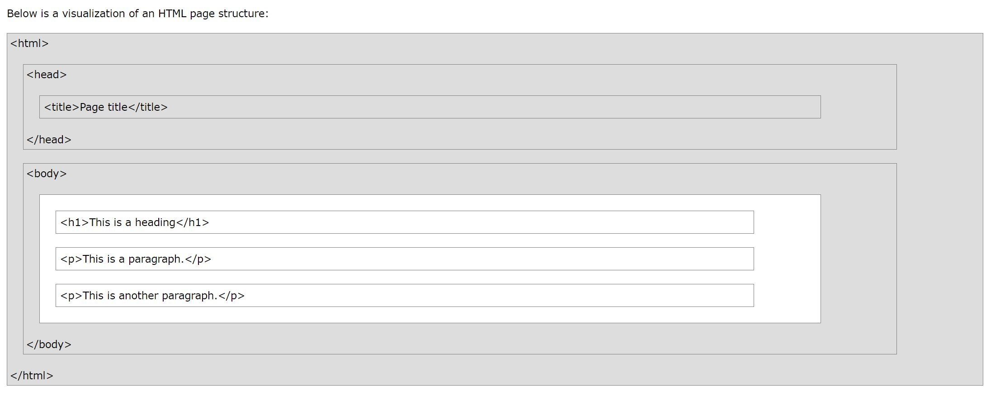

HTML stands for Hypertext Markup Language. It is not a programing language. It creates the structure/framework of a web page. This means that it creates a system which identifies and describes various components of a page such as headings, paragraphs, lists, images, links etc. HTML uses a predefined list of tags to "markup" the document. Each set of item within angled brackets (< and >) is called a tag. A start tag along with some content and an end tag further makes an HTML element. A simple HTML document consists of a series of these elements.
Note: The above picture has been taken from w3schools.com.
CSS stands for 'Cascading Stylesheets'. It is used to make the web page visually appealing. This means that fonts, colors, line spacing, background colors/images, page layout etc. are all controlled by CSS which adds 'style' to the page. This refers to the way the document appears on the computer screen as well as a cell phone display, printed on paper etc. The style definitions are normally saved in external .css files. CSS has its own syntax. A stylesheet is made up of one or more style instructions called rules/rule sets. Each rule selects an element and declares how it should look. The parts of a style sheet rule can be described as : Selector { property: value; } Here, the content within the paranthesis is called the 'declaration'.
It is used to add 'interactivity' to the web pages. These include, checking form entries for valid entries, making the browser remember the account details of the user for the next time, altering the contents of the page, the style or behavior as per user response, etc.It is a client-side scripting language which means that it runs on the user's machine and not on the server. It is a dynamic programing language and does not need a compiler for interpretation. The browser reads the code the same way as we do and interprets it. Just like CSS, a script can be embedded directly in a document or saved as a separate file and linked to the document. Both the methods use the 'script' element. A script is made up of a series of statements. A statement is a command that tells the browser what to do. A simple statement can be: alert("How are you?"); This will make the browser display the alert "How are you?"
What are Single Page Apps (SPAs)? How do they differ from traditional multi-page Web Sites?
Single Page apps and Multi-page apps are both principal ways of building a website, SPAs being the more modern method. Both the SPAs and the MPAs have their own pros and cons and a choice between them depends on the type of the project, the business goals and which method may help in realizing those goals more effectively.
Single Page App
It is a JavaScript web app which interacts with the user by either retrieving all the code with a single page load or dynamically loading necessary resources as per the response to the user action and adding it to the existing page. It relies on client-side rendering instead of reloading at any point in the process or giving control to another page. Basically, it load logic in a browser itself rather than the server.Examples of SPA are Facebook, Google maps, Pinterest, Netflix and many more.
Some of the benefits of using Single Page Applications